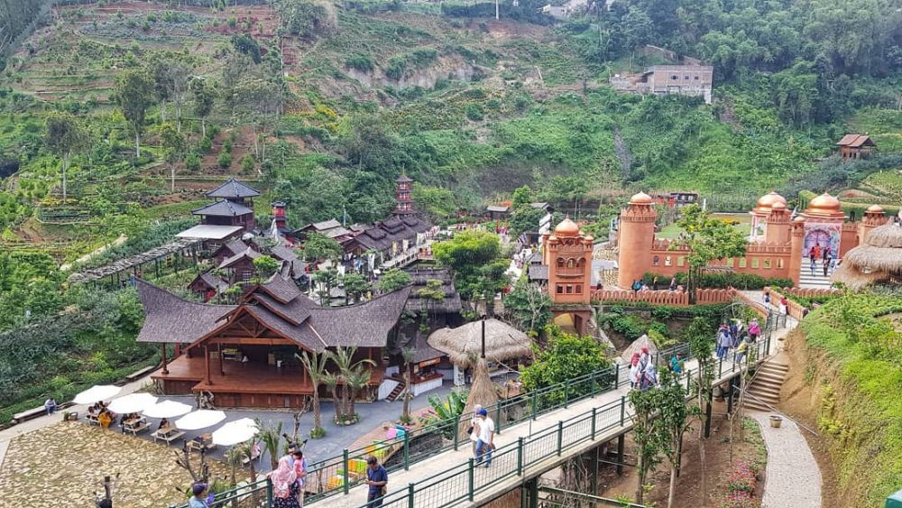

The Great Asia Africa
Banyak orang yang mempunyai impian berkeliling dunia, mengunjungi setiap negara-negara yang menawarkan keindahan, baik dari arsitektur bangunan maupun khazanah budayanya.Bukan hanya Eropa, tetapi kawasan Asia dan Africa ternyata juga memiliki pesona yang tak kalah menariknya untuk dikunjungi.
Andaikan ada satu pintu yang mampu langsung tembus ke kawasan Asia dan Africa, tentu saja pintu tersebut akan ramai dikunjungi oleh para wisatawan.
Yups, itulah sensasi dan kenyataan dari objek wisata yang bernama The Great Asia Africa. Sebuah objek wisata yang selalu ramai dikunjungi oleh wisatawan, terutama di hari libur. The Great Asia Africa adalah objek wisata yang menyajikan pesona keindahan arsitektur, dan budaya yang ada di kawasan Asia dan Africa dalam satu kawasan. Kehadiran The Great Asia Africa mampu menutupi dahaga wisata setiap orang yang ingin berkeliling dunia. Tidak perlu jauh-jauh, tidak perlu biaya banyak, cukup datang ke The Great Asia Africa Lembang, Bandung.
Bagi pengunjung yang berangkat dari Stasiun Bandung bisa naik angkutan jurusan ke Lembang dan turun di depan Farm House Lembang. Sedangkan pengunjung dari arah Terminal Cicaheum atau Terminal Leuwipanjang bisa menaiki bus Damri ke Terminal Ledeng, lalu dilanjut naik angkot ke Lembang.
Untuk kenyamanan pengunjung mengeksplorasi tempat ini, pengelola The Great Asia Africa Lembang telah menyediakan berbagai fasilitas dasar, seperti playgorund, toilet, mushola, kemudian ada juga tempat bersantai dan berintarahat seperti gazebo dan yang lainnya.